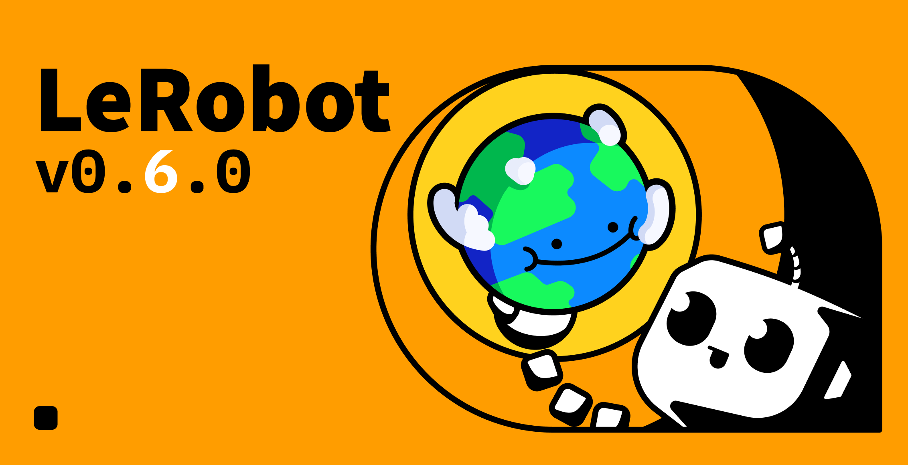
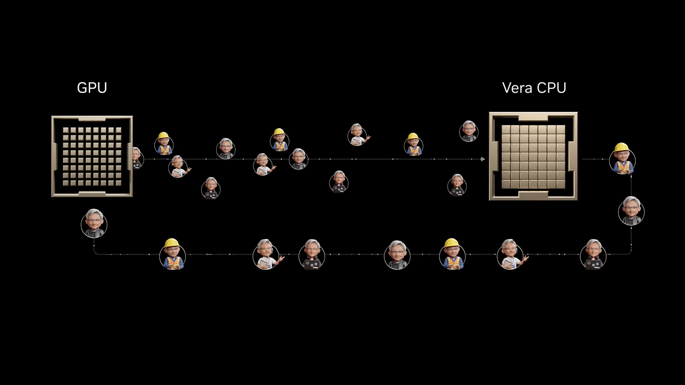
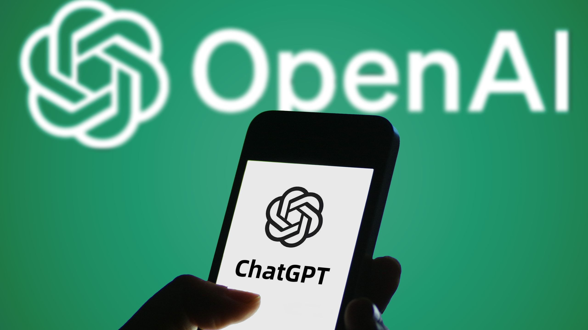

Janet 快车箱
AI Daily Briefing
2026-07-08
VOL 281
对中国创作者和中小企业来说，机会不在“又多一个 AI 工具”，而在把工具接进具体场景：移动办公、素材生成、代码审查、机器人训练、支付调查、法律与风控。能省掉切 App、查资料、审代码、跑部署的产品会收钱；只会讲智能体概念、不给权限边界和成本账单的，会被客户法务和安全团队挡在门外。
接下来 2-4 周要盯三件事：Claude Cowork 的移动端能不能把非代码知识工作做成新入口；Meta Muse Image 会不会把社交图像生成价格继续压扁；开源模型上云和 Agent 安全可视化会不会成为企业采购新门槛。
Meta 7 月 7 日发布 Muse Image，称其为 Meta Superintelligence Labs 的首个 image generation model，已在 Meta AI 中推出，并可直接分享到 feed、story 或 chat。Meta 称 Muse Image 会与 Muse Spark 配合，先理解和规划 prompt，再结合实时 web context 与多张视觉参考生成图像；相关能力也进入 Instagram Stories、WhatsApp direct chats 和广告工具。
Hugging Face 7 月 7 日发布 enterprise 文章，宣布 Hugging Face Models on Foundry Managed Compute。文章称 Microsoft Build 2026 介绍了 Foundry Managed Compute 与 Foundry Model Catalog 中的 Hugging Face models，当前 preview 已可用，精选模型 collection 每周刷新，open-weight 模型可部署到 Foundry Managed Compute。

Hugging Face 7 月 7 日发布 LeRobot v0.6.0，主题是 Imagine, Evaluate, Improve。该版本引入 VLA-JEPA、LingBot-VA、FastWAM 等 world model policies，扩展 GR00T N1.7、MolmoAct2、EO-1、Multitask DiT、EVO1 等 VLA 模型，并加入 Robometer、TOPReward 等 reward models、六个 simulation benchmarks、lerobot-rollout CLI、FSDP 训练和 HF Jobs 云训练。
Hugging Face 7 月 7 日发布 From Hugging Face to Amazon SageMaker Studio in one click，介绍从 Hub 页面直接进入 Amazon SageMaker Studio 的工作流。该集成面向 AWS 上的模型实验和部署，把模型发现、开发环境和云端训练/推理路径进一步接起来。

NVIDIA 7 月 7 日发文介绍 Vera CPU，称其是面向 agent 时代、强调大规模单线程性能的新一类 CPU，并被 Perplexity 等 AI 公司采用。文章还提到 NVIDIA CPU roadmap 将继续推进 Rosa CPU 和 Rigel core。
Cycode 7 月 7 日发布 AI Agent Commit Visibility，定位为识别 AI coding agents 生成的 commits，并追踪这些提交引入的 code vulnerability。产品面向 GitHub Copilot 等 coding agent 进入开发流水线后的可见性和安全治理问题。
Dark Reading 7 月 7 日报道，Google 修复了 Dialogflow CX 中一个 Rogue Agent 漏洞。报道称攻击者可能利用该漏洞从基于 Google 旗舰 AI 工具构建的 AI agents 和 chatbots 中窃取数据，暴露出 agentic chatbot 与企业数据连接后的新风险面。
OpenAI 7 月 7 日发布 Australian Payments Plus 案例，称 AP+ 团队使用 ChatGPT Enterprise 和 Codex 节省时间、提升工作质量，并更快调查复杂支付问题。OpenAI 页面写明，77% 的受访员工每周使用 ChatGPT 节省 2 小时以上，产品覆盖 ChatGPT 与 Codex。
Crunchbase News 7 月 7 日报道，北美创业公司在 2026 年上半年融资达到历史高位，主要由 AI 领域的 late-stage megarounds 推动。报道按 seed/angel、early-stage、late-stage 等融资口径拆分，指出 AI 仍是上半年资本流入的核心驱动力。
Norm Ai 本轮 1.2 亿美元融资由 Khosla Ventures 领投，多个金融和科技投资方参投。与 Harvey 等法律 AI 公司持续融资相呼应，资本正在押注法律、监管、审查和企业内控这类高客单价流程会被 AI agents 重新打包。

Savi 选择从消费者端切入 AI 诈骗防护，瞄准 deepfake voice、短信、勒索电话等新型威胁。相比企业安全工具，家庭反诈 App 的商业化更依赖信任、教育和高频触达，但 AI 诈骗升级正在扩大这个入口的紧迫性。

TechRadar 7 月 7 日报道，OpenAI 与 Work Louder 合作推出 Codex Micro，一款面向 Codex 使用的可编程 macro pad。报道称它基于 Work Louder Creator Micro 2 的布局，提供 13 个机械按键、joystick、rotary encoder 和 touch controls，用于更快触发 Codex coding-agent 操作；完整发布预计在 7 月 15 日。